Precession
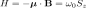
with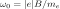
for the electron ( ). Heisenberg equations:
). Heisenberg equations: 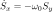
,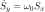
: the expectation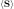
rotates about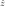
at . Equivalently
. Equivalently 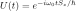
is a rotation by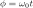
. A rotation by multiplies a spinor by
multiplies a spinor by  (verified by neutron interferometry).
(verified by neutron interferometry).
Rabi problem
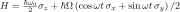
(rotating field) (Rabi 1937). Go to the frame rotating at :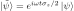
. The Hamiltonian becomes time independent: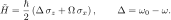
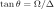
at frequency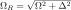
. Starting from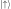
: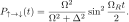
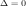
) the spin flips completely after the " pulse"
pulse" 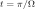
.Picture
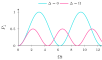
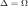
), faster and incomplete.Worked example
MRI at
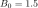
T on protons (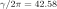
MHz/T):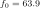
MHz. With an RF field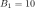
µT,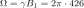
Hz, so the pulse lasts
pulse lasts 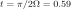
ms. A gradient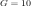
mT/m shifts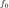
by 426 Hz per mm: frequency encodes position.Engineering applications
NMR spectroscopy and MRI; atomic clocks (Ramsey interrogation); single-qubit gates in superconducting, ion and spin qubits (qubits); ESR. The same mathematics describes the optical two-level atom (Jaynes–Cummings).
Pitfall
A linearly polarised field
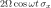
is the sum of two counter-rotating fields; only the co-rotating one is resonant. Dropping the other is the rotating-wave approximation, valid for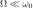
.